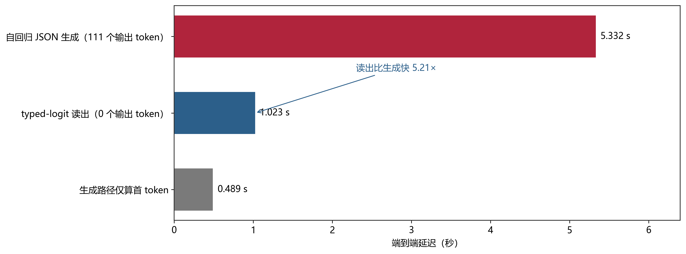
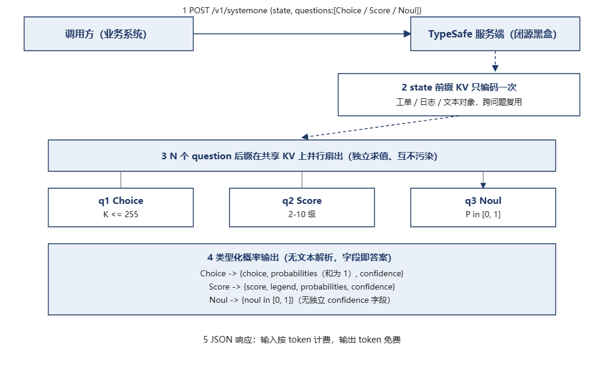
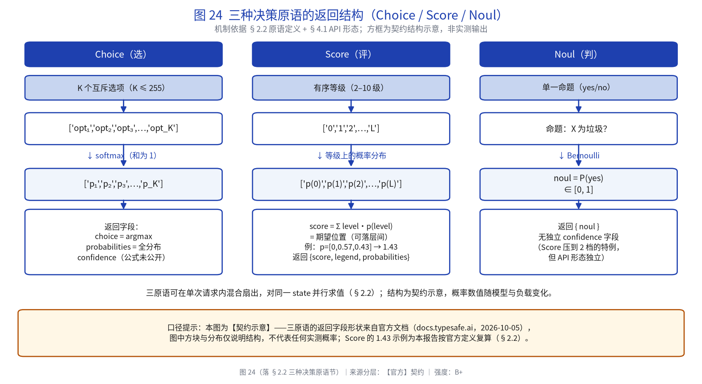

2.1、为什么"生成"是决策的错误抽象
核心观点：将决策视作文本生成问题，是一种昂贵的、不可靠的、且不可信的错误抽象！
要讨论这一观点，我们先看Jev官方的数据：
在同一个端点上并行评估任意多个问题，端到端延迟 70–500ms，输入按 42 美元/10 亿 token 计费、输出免费【https://docs.typesafe.ai/models.md，2026-1005】；
与同期前沿 LLM 相比，"40x–200x faster for the same levels of frontier intelligence"；并且在其工作流评测中宣称 193.6x faster、444.6x cheaper【https://typesafe.ai/blog，2026-09-15 发布】；
这里的核心在于 —— 将文本生成从决策链当中彻底移除，直接生成决策所需的判断数值！
其后续的开源工作和生态基本延续了这一核心范式与判断。这里从三个层面说明“文本生成”在决策链路当中的架构性浪费。
2.1.1、计算与费用：生成路径的信息冗余
核心：决策不需要生成完整文本
一个二值或少量选项的决策，信息论上只需要一到两个比特。通用 LLM 的回答路径却是：自回归生成一整段 token——包括理由、格式、模板、客套——再让调用方解析这段文本，从中推断其选择了哪个选项及相应的确定程度。
开源方案，零训练路线的 SemIf 【github.com/TheoLeeCJ/SemIf-OpenJev】给出了一个干净的同模型对照：
在同一冻结模型（Qwen3.5-4B）、同一 GPU（RTX 3090）、同一组二值判断任务上，把"让模型生成一句带答案的 JSON"与"直接读两个选项 token 上的 logits"做对照
读出路径耗时 1.023 秒（产出 0 个 token），生成路径耗时 5.332 秒（产出 111 个 token），前者快约 5.21×【尽管生成路径的首 token 只要 0.489s】；
| 读出路径 | 输出 token 数 | 端到端耗时 |
|---|---|---|
| 自回归生成 JSON 数组 | 111 | 5.332s |
| 直接读选项 token logits | 0 | 1.023s |

结合官方的数字来看，在这一范式下：决策的边际成本被压到了可以"滥用"的水平 —— 而Jev的命名也正来源于此。
直接借鉴 Jevons悖论的含义【蒸汽机效率提升反增煤耗】：智能成本下降反增用例 ——
单次智能推理的成本下降（算力、token 成本变便宜） → AI 能力变得廉价易得 → 开发者、业务方想出更多新场景、新用例，到处接入 AI → 整体 AI 调用量、算力总消耗大幅上涨；
2.1.2、协议可靠性：解析与顺序敏感性
核心：文本解析是脆弱协议
生成式决策把"决策"编码在自然语言里，调用方必须事后解析。
解析协议隐式依赖措辞、标点、模板，任何一个环节变化都可能让工作流静默断裂；
更隐蔽的是选项顺序与措辞敏感：开源生态的实证（von 的选项隔离架构、Jev 与多个开源模型在选项乱序下的翻转率差异，详见 后续的 失败模式 讨论）显示，生成式模型对"哪个选项排在前面""选项叫什么名字"高度敏感，而 Jev 式直接决策模型至少将这一点转化为可测量、可攻击、可防御的显式问题；
2.1.3、概率可信度：语言化置信与校准
核心：置信度不是校准
LLM 的文本回答可以附带一句"我很确定"，但这句话不是概率【甚至可以输出口头概率，但它依然是不准确的】。
而概率校准（calibration）则要求：给 0.2 概率的事件，长期看恰好约 20% 发生。生成式模型的 verbalized confidence 与其真实正确率之间的鸿沟，是 2022 年以来大量实证研究的主题，如 Kadavath 等首次系统测量了 P(True) 与真实校准的差距【2207.05221】。
在现实世界当中，当决策要驱动自动化动作、级联路由、风险判断时，没有校准的概率和没有概率一样危险——它本质上只是将错误包装为置信度。
2.2、System One 范式的操作定义
范式本质：读 logits，不生成文本
如果要总结的话，Jev 与整个 System One 生态的范式本质可以压缩成一句话：
将决策从生成中分离出来：对调用方声明的选项集，用一次前向计算直接读出选项概率分布，不生成任何决策文本。
总结来看，这条范式有四个公开的形态要素（主要是官方生态与体系，开源技术架构与体系讨论见后）：
声明式问题（primitive）：Choice/Score/Noul 三种原语，选项由调用方给出，模型不自由发挥；
概率输出：对每个选项给概率，且公开承诺"和为一（归一化）"与按单个问题选项基数限制（K≤255）的两阶段打分【即对于超出基数限制的选项拆成两步，见https://docs.typesafe.ai/primitives/choice.md】；
阶段 1：打分粗筛：用 Score / Noul 类打分逻辑，对全部候选集合做相关性打分、排序，捞出 Top-N 短名单（N ≤ 255）
阶段 2：原生 Choice 精判：把短名单送入标准 Choice 原语，输出最终选择、概率分布、置信度
并行独立评估：同一 state 上的多个问题并行求值，"adding more questions does not create context-rot"【官方，docs.typesafe.ai】，这是对生成式模型"上下文污染"问题的结构性解决应对；
训练目标与生成解耦：官方路线是 RLCD（Reinforcement Learning for Calibrated Decisions，校准决策强化学习）——训练模型返回决策与校准概率，而非生成文本；
2.3、必要的基本概念与术语：System One 模型与类型化决策
定位：
做概念与基本术语对齐：
主要包括：Jev、System One 模型、typed decision model、三种原语、三条后训练路线、校准及其度量、四类实现路线、两类生产模式，各自指什么、出自哪份证据、彼此如何区分
2.3.1、顶层概念：System One 模型、Jev、typed decision model
在学术论文与开源项目当中，这三个词常被混用，但层级不同：
System One 模型是类名；
实际上按照按照system-1的内涵来讲，其意义更丰富，就比如之前 LLM 推理领域的系统1推理与系统2推理的差异，不过这里将这个差别的比较范围提到了生成式与判别式的边界；
Jev 是该类的官方商业产品，即特指 Jev 官方；
typed decision model 是学术文献对同类对象的描述性称呼，论文当中常见；
如下为详细对比表：
| 术语 | 一句话定义 | 出处 | 区分&差异 |
|---|---|---|---|
| System One 模型（System One model） | 一类不生成自由文本、对调用方声明的问题单次前向即返回“带类型答案 + 概率分布”的模型；类名借自 Kahneman《Thinking, Fast and Slow》的快思考系统 | TypeSafe 官方博客 FAQ | 是类别，不是某一个模型； 与之相对的是自回归“System Two”式生成模型； |
| Jev | TypeSafe AI 发布的 System One 模型产品本身 | TypeSafe 官方文档 | 是 System One 类的官方商业实例 |
| typed decision model （类型化决策模型） |
学术界对同类对象的描述性称呼，核心特征为输出被约束为固定类型（选项、量表分、0–1 概率）而非自由文本的决策模型 | 最早见论文2609.23886 | 是描述性类别词，与厂商命名无关；this-that-model 是该词下的独立实现，不等于 Jev |
| state | 一次请求内所有问题共享的上下文输入（如工单、日志、文本对象），类型可为 string / object / array等【Jev 官方】 | 官方概念页 | state 与 question 分离：state 只算一次、跨问题复用；问题（question）才是每次独立求值的对象 |
| decision head（决策头） | 模型末端专门读出选项/概率的小参数模块； 官方是否有使用独立决策头目前技术未公开，开源方案则形态各异 |
众多开源实现（如laya、kev等） | 与“整个 backbone”相对：决策头只负责读出，不负责理解 state |
这类范式的本质描述之前已经说过（对调用方声明的选项集，用一次前向计算直接读出选项概率分布，不生成任何决策文本），这个描述当中有三个可操作的对象：“声明的选项集”、“直接读出”、“概率分布”
——
这正好一一对应下边的概念展开：决策原语（2.3.2）、读出路线（2.3.5）以及校准度量（2.3.4）。
如下为与生成式 LLM “接口”的直观对照，来更好理解“typed”到底类型化了什么：
| 维度 | 生成式 LLM | System One / typed decision model |
|---|---|---|
| 输入 | 自由 prompt | state（结构化上下文）+ typed question（枚举选项/量表） |
| 输出 | 自回归 token 流 | 结构化字段：choice/probabilities/score/noul + confidence |
| 调用方解析 | 需正则/JSON 抽取，协议脆弱 | 无文本解析，字段即答案 |
| 概率 | 需额外提示“你多确定”，且 verbalized 通常是未校准的 | 概率是一等输出 |
注意，state 与 question 的分离是整套并行独立决策的结构性前提：
state 表示的是“这段文本讲了什么”，question 是“你要就它问什么”；
同一 state 上挂 N 个互不相关的问题，语义上仍然是 N 次独立判断而不是 N 个互相干扰的提示词；
如下为官方 API 一次请求的调用时序示意：

2.3.2、三种决策原语：Choice / Score / Noul
Jev 官方将API的调用方式（问法）分为收窄为三种原语（primitive），对标了“选、评、判”三类决策，且可在单次请求内混合调用。
三原语具体含义如下：
| 原语 | 一句话定义 | 返回字段 | 硬约束 | 区分 |
|---|---|---|---|---|
| Choice | 从调用方声明的 K 个选项中选一个，返回全选项概率分布 | choice（最高概率选项）、probabilities（和为
1 的全分布）、confidence |
K ≤ 255 选项 | 选项由调用方枚举、模型不自由发挥；K 个互斥选项，输出是离散分布 |
| Score |
把对象放到一条有序 rubric
层级[量表]上打分，返回概率加权的期望位置 |
score（可落在两层之间的连续值）、legend、probabilities、confidence |
至少 2 级、至多 10 级 | 与 Choice 的区别在“层级有序”：\(score =
\sum {level × p(level)}\) 是期望位置而非档位整数； 与 Noul 的区别在量表 ≥2 档； |
| Noul | 对单一命题做 yes/no 判断，返回“yes”的概率 | noul（0=no、1=yes 的概率） |
二值，无独立 confidence 字段 | 命名一说源自 "Bernoulli distribution" 的缩写【转引见第三方插件
github.com/simonw/llm-typesafe ，官方文档未见词源说明】； 是 Score 量表压到 2 档时的特例，但 API 形态独立 |
这里有四点补充：
Choice 的概率分布和为 1，
confidence是该分布上派生的标量（官方未给 confidence 的精确计算公式，未公开）；Score 的
score是连续期望位置，可外部验算；- 示意：某对象在 3 级量表 {0,1,2} 上的概率分布为 p(0)=0、p(1)=0.57、p(2)=0.43，则 score = 0×0 + 1×0.57 + 2×0.43 = 1.43——落在 1 与 2 之间而不必取整；
Noul 是二值特例但独立成原语：对命题“X 为垃圾内容？”返回 0.72，即 yes 概率 0.72；它与“Score 压到 2 级”语义重合，但 API 上没有
confidence字段、也不需要 legend，调用方解析路径不同；两阶段打分只作用于高基数 Choice 情况：
选项多时先独立打分、再显式选择；
低基数 Choice 与 Score/Noul 不涉及该阶段；
三原语可混合调用：一次请求里同时放 Noul（要不要看）、Choice（分到哪类）、Score（打几分），所有问题对同一 state 并行求值；
如下为示意图【可以删除】：

2.3.3、三条后训练路线：RLHF / RLVR / RLCD
在 Jev 官方的宣传中，其将Jev的训练定位为继 RLHF 和 RLVR 之后的第三条后训练技术路线。那么什么是 RLCD ？这里对这三个概念做简单说明【有关RLHF/RLVR等RL强化学习的技术路线，见额外的技术总结】。
| 技术路线 | 一句话定义 | 奖励/信号来源 | 输出形态 | 已知代价/副作用 | 本报告可引证据 |
|---|---|---|---|---|---|
| RLHF （Reinforcement Learning from Human Feedback，人类反馈强化学习） |
用人类标注员偏好训练模型生成“更好/更符合人类偏好”的文本 | 人类更喜欢哪个回答 | 生成文本 | 谄媚、模式坍缩（mode dropping） | Jev 官方定位中作为对照系（创始人 Almeida 为 RLHF 共同发明人之一） |
| RLVR （Reinforcement Learning with Verifiable Rewards，可验证奖励强化学习） |
用程序可机械验证的正确性（测试通过、答案相等）作奖励训练推理模型 | 自动判分的对错 | 生成文本（常含推理链） | 推理慢且贵；奖励与置信度无关，模型学会“全押最可能答案” | 代表论文
arXiv:2402.03300（DeepSeekMath）【官方论文】； 其校准代价机制见后续讨论 |
| RLCD （Reinforcement Learning for Calibrated Decisions，校准决策强化学习） |
训练模型返回“带类型决策 + 校准概率”而非生成文本，奖励指向报告概率与真实频率的匹配 | 报告置信度与真实正确率的匹配程度 | 带类型答案 + 概率分布 | 未公开 |
官方原文：trains TypeSafe to return decisions and calibrated probabilities instead of generated text【[https://docs.typesafe.ai/introduction/machine-learning-primer.md](https://docs.typesafe.ai/introduction/machine-learning-primer.md)】 |
概况来讲，三种技术路线都是以RL为基本学习/优化方法，仅目标/任务有所差异：
关于RLHF与RLVR，在LLM的后训练当中已经讨论很多，这里不再展开；
官方把 RLCD 与 RLHF、RLVR 并列，依据是三者奖励信号的来源不同（人类偏好 / 可验证正确性 / 概率与频率匹配）；但实际，就技术路线的边界来讲，RLCD 在输出形态上与前两条路线彻底分野 —— 前两条训练的都是“生成文本”，只有 RLCD 训练“返回结构化决策”—— 这是很重要的差异与边界；
简单来讲，RLCD 的第三条路线，即是奖励层面的分类，也是输出契约层面的分裂！
就具体细节来讲，在Jev提出 RLCD 时并未公开具体技术方案，但在学术讨论当中通常都会将其与MIT于2025年7月提出的RLCR（Reinforcement Learning with Calibration Rewards）【2507.16806】进行关联，认为两者在目标上基本一致，都是使用有界的恰当性评分规则（proper scoring rule）作为奖励来训练模型输出概率校准。
实际上，在开源方案当中，或多或少的都借鉴了这一思路，如下为开源复现当中容易混淆的概念区分：
| 区别 | 证据 | |
|---|---|---|
| 官方 RLCD vs 学术公开配方 | - 官方 RLCD 只声明目标、未公开损失函数与配方； - 学术侧同目标配方是完全公开的 RLCR（Reinforcement Learning with Calibration Rewards；论文题《Beyond Binary Rewards》，MIT，arXiv:2507.16806，Brier 形式奖励 + 正确性项）； > 二者数学内核同源（严格适当评分规则），差异在奖励组成、数据组织与公开程度； > > |
【官方论文，arXiv:2507.16806】 |
| RLCD vs verbalized-confidence 微调 | - ConfTuner（arXiv:2508.18847）、Rewarding
Doubt（arXiv:2503.02623）等早期工作训练的仍是“模型在文本里说出置信度”； - RLCD 把概率做成结构化输出本身； |
【官方论文，arXiv:2508.18847 / arXiv:2503.02623】 |
| verbalized confidence vs 校准概率 | - Kadavath 等（arXiv:2207.05221）系统测量了“模型嘴上说的确信度”与真实校准的差距：True/False 式读出优于自由文本置信度，但依然不是校准概率——这是整条路线的动机起点 | 【官方论文，arXiv:2207.05221】 |
| RLCD vs 开源 RLCD 复现 | 开源侧以公开配方复现同目标，包括： - github.com/NandhaKishorM/laya - 《OpenJev-RLCD: A Working RLCD Implementation》【arXiv:2609.38850，实际提出了一套“先校准后强化”的训练方法来让模型在生成推理链后给出的概率分布真正反映其决策的准确性，并非这里定义的TDM模型训练】； > 这些都是第三方实现，配方差异在后续讨论 > > |
2.3.4、概率校准及其度量：Calibration / ECE / Brier
这里主要对TDM相关的概率校准的概念进行简单介绍，后续会对核心技术做详细机制说明。
| 概念 | 一句话定义 | 出处 | 区分 |
|---|---|---|---|
| 校准（calibration） | 报告概率为 q（真实分布记为 p）的预测结果，长期看恰好以比例 p 正确；官方明示这是在整体样本分布上的比率，不是对单个答案的保证 | "Outcomes assigned a probability of 0.2 should occur about 20% of the time… groups of predictions, not a guarantee about any single answer"【官方，[https://docs.typesafe.ai/introduction/machine-learning-primer.md](https://docs.typesafe.ai/introduction/machine-learning-primer.md)】 |
校准与准确率正交：很准但不知道自己何时错 —— 等价于：高 Acc、高 ECE |
| ECE（Expected Calibration Error，期望校准误差） | 把预测置信度分桶，加权平均“桶内平均置信度 −
桶内正确率”的绝对差 |
【参照 RLCR 论文中 HotpotQA 对照主表使用】 |
ECE 越小越校准；它是单标量汇总，不区分系统性过度/不足自信 |
| Brier 得分（Brier score） | 预测概率与真实 one-hot
结果之差的平方，同时惩罚“答错”与“过度自信” |
【RLCR 论文中 奖励第二项即 Brier 形式】 | Brier 把准确率与校准压进一个标量； ECE 只管校准不管对错，二者互补 |
| 温度缩放（temperature scaling，T） | 冻结模型后用 \(p=softmax(logits/T)\) 压平/锐化分布，不改 argmax，只在留出集上拟合标量 T | 开源项目： - github.com/bespokelabsai/nimble T=2.179 - github.com/NandhaKishorM/laya 按题型×选项数分组 |
属后处理校准，不训练权重；粒度缺陷的实测讨论见后续内容； |
| 内禀校准 vs 后处理校准 | - 内禀校准指校准由训练目标本身保证（RLCD/评分规则
RL，严格适当性）； - 后处理校准指冻结模型后另拟合参数（如上边的温度缩放） |
内禀侧的代表就是RLCR；后处理侧见上一行，通常代表是Laya； | 二者可叠加不互斥；开源实践几乎都“先内禀/监督、再以后处理补充校准” |
需要注意，上述提到的校准度量（ECE/Brier/温度缩放）回答的是"报告概率 p 的预测是否长期以比例 p 正确"——即模型对同一答案置信得准不准。与早期 Kuhn 等（2023，2302.09664）提出的语义不确定性不同，其主要关注另一类问题：当多个回答只是同一答案的不同措辞/同义改写时，模型是否把它们当成了互斥的不同选项、从而稀释概率！
其做法是先用句向量把同义回答聚类、在簇内聚合证据，再区分"模型拿不准该选哪一个真实答案"（epistemic，可随数据改善）与"答案本身措辞不一、没有唯一真值"（linguistic 不确定性）之间的差异。
这里实际涉及到了类型决策模型TDM本身的特征：其定位为对调用方枚举声明的选项集读出概率，恰好就把"选项是否互斥/同义"的责任前置给了调用方！【
这个实践当中需要注意：若声明的选项之间存在语义重叠或可互相改写，ECE 再小也会把语言学不确定性误算成决策不确定性！
2.3.5、实现路线术语：零训练读出 / 专训权重 / 扩散读出 / 视觉决策
因为Jev官方未公布具体技术细节，这里仅围绕开源生态当中所出现的技术进行4类实现形态的概念说明，更详细的技术方案与架构实现等见后续内容。
| 路线 | 定义 | 代表性工作 | 差异&特征 |
|---|---|---|---|
| 零训练读出 （frozen / training-free readout） |
冻结现成 LLM，不改任何参数，只在答案 token 或指定 hidden state 上直接读出选项概率分布（可后接温度缩放） | - github.com/TheoLeeCJ/SemIf-OpenJev - 2610.00831 AnyJev； - 2610.02076 LLM2Jev； - github.com/hr98w/jev-visual |
不碰权重，能力上限随基座； 代价是概率普遍未校准（如 SemIf 自报 uncalibrated） |
| 专训权重 （purpose-trained / fine-tuned decision weights） |
在冻结或半冻结基座上加决策头（pointer/slot/候选头）或做 LoRA/SFT，用标注或评分规则奖励专门训练决策能力 | - github.com/NandhaKishorM/laya - github.com/jaredpalmer/kev - github.com/bespokelabsai/nimble - github.com/wfzyx/von - github.com/malevrigns/agent-jev |
参数被更新； 与零训练读出的分界是“是否反传梯度更新权重”； 上限更高但要数据与训练预算； |
| 扩散读出 （diffusion readout） |
不在自回归解码器上读 logits，而用扩散模型在“决策画布”上并行去噪出选项分布 | - github.com/razorback16/openjev > 注意区分与OpenJev-RLCD不同； > > 其主要是基于 DiffusionGemma（离散扩散模型）做 “读取推理” —— 这里牵扯到扩散生成的机制，简单来讲存在一个画布结构，要求只有答案位置被 mask（掩码、被噪声盖住），一个问题对应一个答案槽位（slot），这个槽位只允许输出 1 个 token，然后读取对应的概率分布（每个槽各个候选标签的概率，这个概率分布本身就是答案） > > |
与因果/自回归读出的骨架不同； 保持线协议兼容但推理机制非自回归； |
| 视觉决策 （visual decision model） |
把 shared visual context（图像/帧）作为 state，对图像内容做 Choice/Noul 式 typed 决策 | - 论文 2609.25845 提出Visual Jev； - 论文 2609.29283 From Text Decisions to Pixels 也聚焦与视觉决策； - 开源项目 github.com/hr98w/jev-visual > 使用 Qwen3.5-0.8B 和 MLX，对同一张图片回答多个问题，并不进行训练，而是在推理范式上进行相应的工程化改造 > > |
官方 Jev API 输入仅文本，视觉路线全部来自开源/学术侧；state 模态从文本扩展到像素 |
这里需要进一步进行澄清的概念：
pointer head / slot head：前者在锚点 token（如
</opt>）的隐藏状态表示上读出打分，后者用专用槽位做 256 路 softmax：代表分别为 github.com/jaredpalmer/kev 与 github.com/iapp-technology/openthai-systemone；
都属 权重训练 路线内部的读出头选型差异；
listwise / pointwise：含义区别为选项间互相可见、联合打分（listwise），还是各选项独立打分（pointwise）；
官方高基数 Choice 的“先独立打分再显式选择”即 pointwise 阶段；选项交互的是外部的一种技术推断；
数值解码路线：对“数值类决策”用多路决策树/多分支读出代替单 softmax——【见论文 2609.28587 NumericJev】，是专训权重路线在数值输出上的变体，具体见论文；
部署/运行时路线：这不是第五种训练路线，而是将决策模型的机制与思想引入到模型部署与推理当中，改变了推理服务的形态，主要方法是 prefill-only + radix 缓存的生产推理服务；
github.com/ekzhang/openjev-sglang
端侧/移动端部署如 github.com/mizorewww/laya-mlx、github.com/mizorewww/laya-coreml
他们不改读出机制，只改权重在哪里跑！
2.3.6、生产模式术语：置信度级联 / 影子评估
两类已被公开案例反复验证的落地形态，如下：
| 术语 | 定义 | 代表工作 | 区分 |
|---|---|---|---|
| 置信度级联 （cascade / confidence routing） |
便宜的决策模型处理高置信度多数，把低置信度尾部升级给贵模型或人工； > 成立前提是置信度本身可信 > > |
- 论文 2609.26550 JEV-as-a-Judge：Accept When Confident, Escalate
When Unsure】； - 开源项目：github.com/0xNatoshi/jev-codex-router |
级联是“选择性预测”在工程上的形态； > 与单纯阈值分流的区别在于上游必须是校准概率 > > |
| 影子评估 （shadow evaluation） |
候选系统与现系统并行跑历史样本、只记录不执行，在调用方自己的数据分布上摸真实表现 | - 开源工作 github.com/abhishek085/open-spark-jev：按数据源分别报告、不混分 | 影子评估是上线前动作，不产生对外决策； > 与离线基准的区别是用调用方真实流量分布而非公开集 > > |
这里重点说明比较重要的置信度级联模式，其能成立的逻辑链：校准 → 阈值可解释 → 尾部可升级，三个环节缺一不可，就目前公开研究案例来讲，主要如下：
| 应用实例 | 形态 | 证据 |
|---|---|---|
| 反诈一通筛查 | Noul 式 one-pass 二值判断 | 【论文，arXiv:2609.23959（CallScreenBench）】 |
| 渗透测试 harness | Jev/Laya 作 agent 的 System One 决策层 | 【论文，arXiv:2609.28940】 |
| 手机 GUI 执行 | Jev 作移动端 executor | 【论文，arXiv:2609.30186（Jev-Mobile）】 |
| 代码仿真评估 | 代码负责仿真、Jev 负责评判 | 【论文，arXiv:2610.01834】 |
关于影子评估的最小可落地协议/方案，可简化如下：
选 1000–2000 条带已知标签的历史样本（工程经验值，与 ECE 分桶最小样本量相关） → 用与线上相同的 state/question 结构调决策模型 → 只记录不执行 → 在调用方自己的数据分布上算 acc 与 ECE，不引用厂商基准；
2.4、本章小结
本章关于效率、协议与校准的论据分别来自 SemIf 同模型延迟对照（5.21×）、TypeSafe 官方定价与延迟区间，以及 Kadavath 等关于 P(True) 与 verbalized confidence 的实证 [6]。官方性能数字为厂商自报；SemIf 延迟为本综述对公开 README 的复算。跨厂商基准不可直接比较。
相关基础概念与术语速查表如下：
| 缩写/词 | 展开 |
|---|---|
| state | 跨问题共享的上下文输入 |
| Choice / Score / Noul | 三种决策原语 |
| RLCD / RLCR / RLHF / RLVR | 四条后训练/训练路线 |
| ECE / Brier / 温度缩放 | 校准度量与后处理 |
| 零训练读出 / 专训权重 / 扩散读出 / 视觉决策 | 四类实现路线 |
| pointer/slot head、listwise/pointwise、数值解码 | 读出头与打分方式细节 |
| cascade / shadow eval | 两类生产模式 |